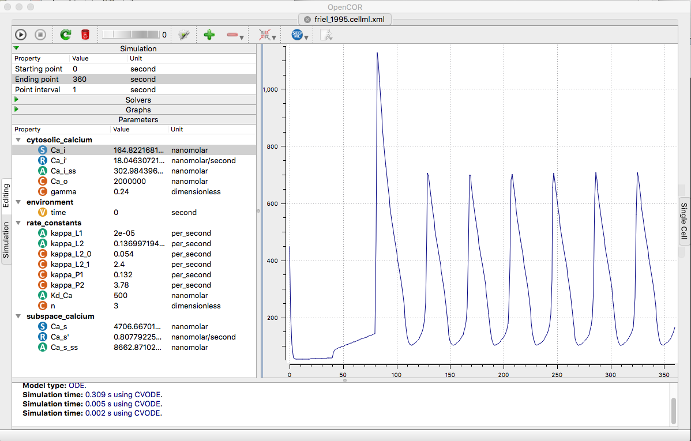

The models for the paper:
[Ca2+]i oscillations in sympathetic neurons: an experimental test of a theoretical model, David D. Friel, 1995, Biophysical Journal, 68, 1752-1766.
PubMed ID: 7612818
doi: 10.1016/S0006-3495(95)80352-8
is available at the cellml.org website:
https://models.cellml.org/e/59/friel_1995.cellml/view
“This CellML model runs in OpenCell and COR, and reproduces Figure 4 from the original paper”
Example: changing the ending point to 360 seconds and right-clicking the Ca_i in cytosolic_calcium parameter list (select Plot against intergration variable), and running in opencor (click upper left play triangle) creates the following graph similar to fig 4b middle trace:
